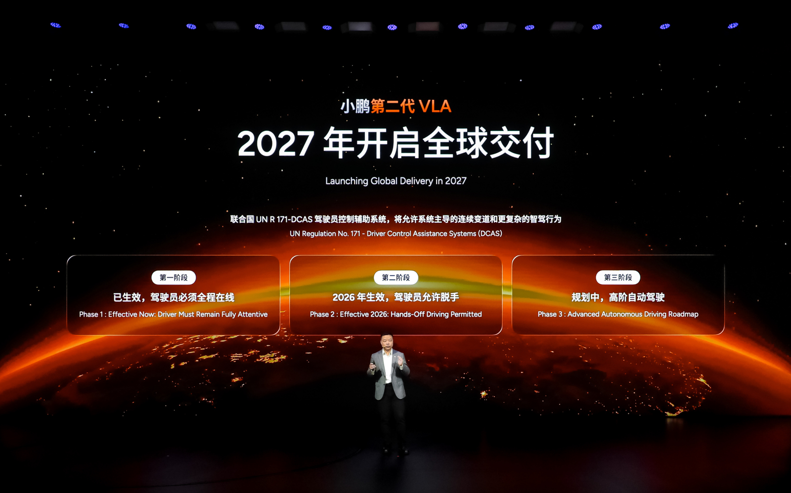

XPENG Motorsは、知能運転のグローバル進化における重要な節目として、VLA 2.0知能運転システムのグローバル納入を2027年に開始すると発表した。Volkswagenが中国市場におけるこの技術の最初のローンチパートナーに指定された。
発表はXPENGの「The Future」VLA Media Experience Dayで行われ、VLA 2.0のアーキテクチャとグローバル展開計画が示された。VLA 2.0を搭載したXPENG Robotaxiはすでに公道テストを開始しており、試験運用は同年後半に始まる予定である。
XPENGは、VLA 2.0を乗用車とRobotaxiの双方へ展開する計画を示している。さらに国際的な道路テストも開始し、技術を中国国内だけでなくグローバル市場へ広げる。
XPENG VLA 2.0は、従来の逐次的なVision-Language-Actionではなく、より直接的なVision-to-ActionのE2E構造を掲げる。これは、知覚、理解、行動生成を分断されたモジュールの連鎖として扱うのではなく、視覚入力から運転行動へ直接つなぐ方向性を示す。
XPENGはVLA 2.0を、乗用車、Robotaxi、ロボット、飛行体へ広げるPhysical AIの基盤と位置付けている。自動運転開発の観点では、車両向け知能運転システムを単一カテゴリに閉じず、複数の身体性を持つ製品群へ展開する戦略が読み取れる。